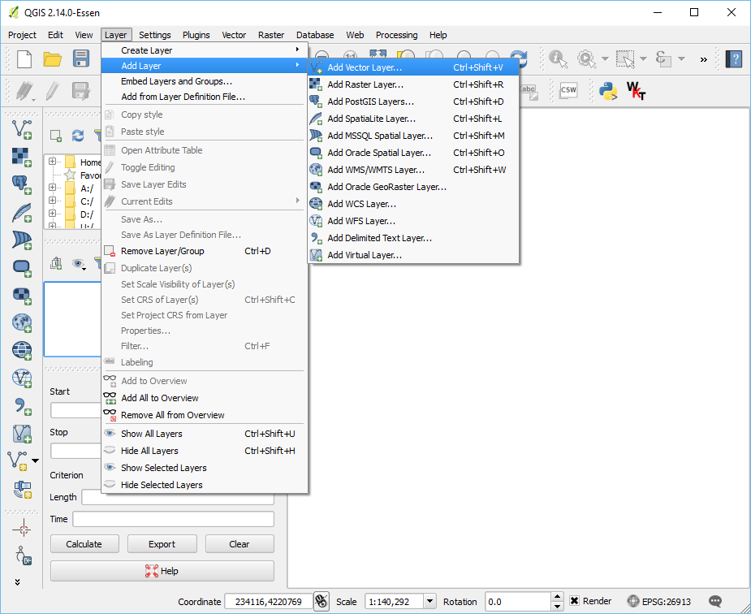

Finding the boundary
This exercise uses PDAL to find a tight-fitting boundary of an aerial scan.
Printing the coordinates of the boundary for the file is quite simple using a
single pdal info call, but visualizing the boundary is more complicated. To
complete this exercise, we are going to use QGIS to view the
boundary, which means we must first install it on our system.
Exercise
Note
We are going to run using the Uncompahgre data in the ./density
directory.
$ pdal info ./exercises/analysis/density/uncompahgre.laz --boundary
{
"boundary":
{
"area": 90431700.63,
"avg_pt_per_sq_unit": 20.23338738,
"avg_pt_spacing": 2.580181288,
"boundary": "MULTIPOLYGON (((245561.32 4208409.0,245731.84 4208556.7,246072.88 4208409.0,246371.29 4208630.5,246584.44 4208556.7,246882.84 4208778.2,247095.99 4208704.4,247394.4
...
… a giant blizzard of coordinate output scrolls across our terminal. Not very useful.
Instead, let’s generate some kind of vector output we can visualize with
QGIS. The pdal tindex is the “tile index” command, and it outputs a
vector geometry file for each point cloud file it reads. It generates this
boundary using the same mechanism we invoked above – filters.hexbin.
We can leverage this capability to output a contiguous boundary of the
uncompahgre.laz file.
$ pdal tindex create --tindex ./exercises/analysis/boundary/boundary.sqlite \
--filespec ./exercises/analysis/density/uncompahgre.laz \
-f SQLite
> pdal tindex create --tindex ./exercises/analysis/boundary/boundary.sqlite ^
--filespec ./exercises/analysis/density/uncompahgre.laz ^
-f SQLite
Once we’ve run the tindex, we can now visualize our output:
Open QGIS and select Add Vector Layer:
{kind=link}
Navigate to the exercises/analysis/boundary directory and
then open the boundary.sqlite file:
{kind=link}
Notes
The PDAL boundary computation is an approximation based on a hexagon tessellation. It uses the software at http://github.com/hobu/hexer to do this task.
filters.hexbin can also be used by the density to generate a tessellated surface. See the Visualizing acquisition density example for steps to achieve this.
The tindex can be used to generate boundaries for large collections of data. A boundary-based indexing scheme is commonly used in LiDAR processing, and PDAL supports it through the
tindexapplication. You can also use this command to merge data together (query across boundaries, for example).